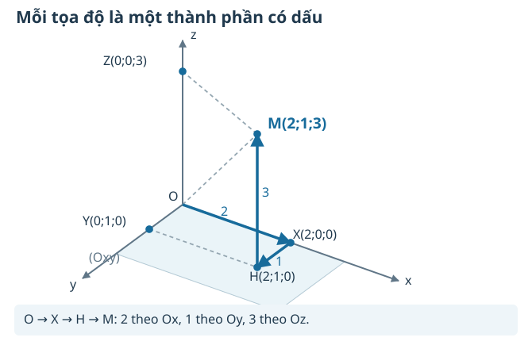
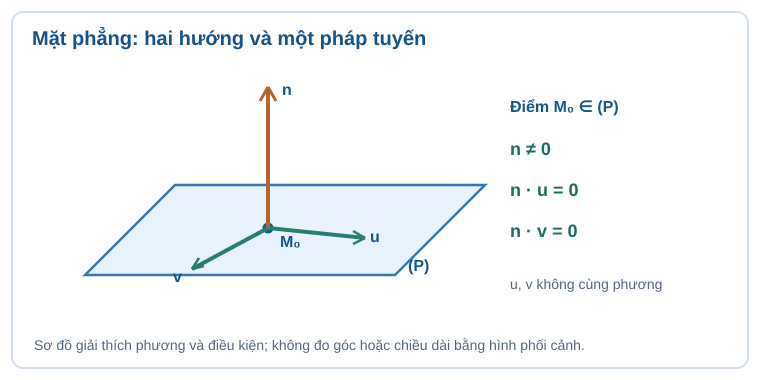
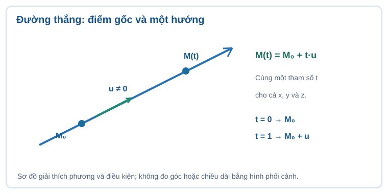
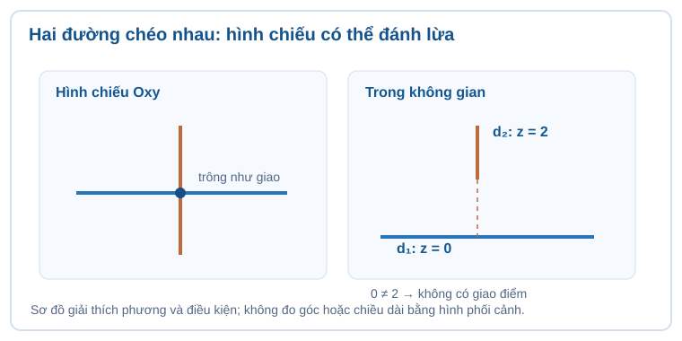
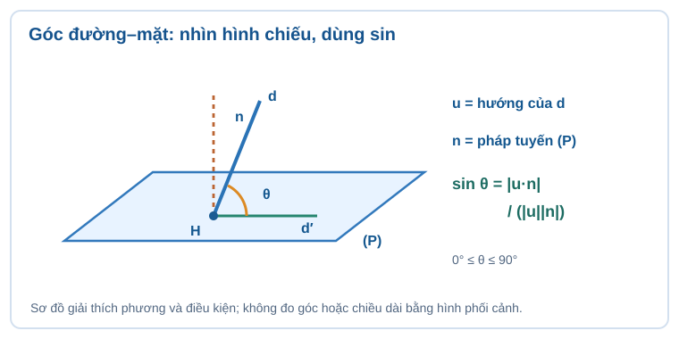
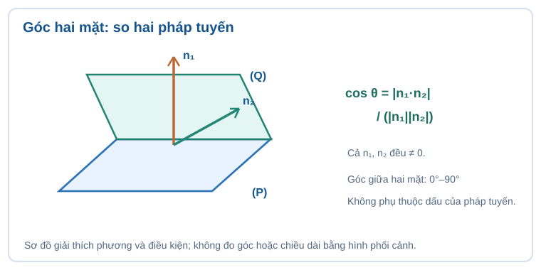
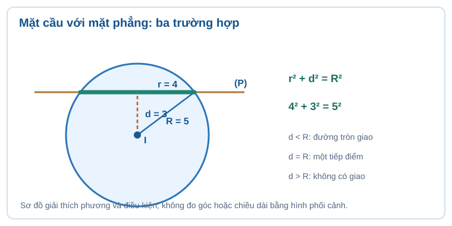

HỌC THEO CHUYÊN ĐỀ · CĐ18 · TOÁN THPT
Khám phá thêm: Mô hình trực quan Chuyên đề 18 (tùy chọn).
Kiến thức
Ta bắt đầu từ những câu hỏi gần gũi: một vật chuyển động ra sao, mặt phẳng nghiêng thế nào, và một vùng không gian hình cầu có bao phủ một vị trí không? Tọa độ cho phép chuyển từng câu hỏi hình học thành suy luận có thể kiểm tra bằng phép tính. Mỗi khi dùng công thức, hãy nhận diện đối tượng và điều kiện trước.
1. Vectơ và phép toán hình học

Đọc hình: Hãy chỉ điểm A, theo lần lượt ba hướng AB, AD, AA′ và xác định C′. Đường chéo AC′ là độ dời tổng hợp; không dùng độ dài nét xiên trên màn hình để tính độ dài thật.
1.1. Vectơ và vectơ-không
Một vectơ biểu diễn độ dời có hướng từ điểm đầu đến điểm cuối. Ta có thể tịnh tiến mũi tên song song mà không đổi vectơ; vì thế vectơ không gắn với vị trí tuyệt đối. Vectơ-không có hai đầu trùng nhau, độ dài 0. Theo quy ước SGK, nó cùng hướng và cùng phương với mọi vectơ. Về hình học, nó không chỉ một hướng dịch chuyển riêng, nên không xác định góc giữa vectơ-không với vectơ khác.
Kiến thức cần ghi nhớ
Một vectơ biểu diễn độ dời từ điểm đầu đến điểm cuối. Vectơ-không có độ dài 0, cùng hướng và cùng phương với mọi vectơ theo quy ước; không dùng nó để xác định góc.
Ví dụ
Đề bài: Trong ba điểm A–B–C thẳng hàng theo thứ tự, ghép \(\overrightarrow{AB}\) với \(\overrightarrow{BC}\) thu được độ dời nào? Khi \(A=B\), \(\overrightarrow{AB}\) có cùng hướng với \(\overrightarrow{AC}\) theo quy ước không? Có xác định được góc giữa chúng không?
Lời giải: Nếu A,B,C thẳng hàng và \(\overrightarrow{AB},\overrightarrow{BC}\) cùng hướng thì khi đi A→B rồi B→C, ta thu được độ dời A→C. Khi A trùng B, vectơ \(\overrightarrow{AB}\) là vectơ-không dù hai điểm mang cùng vị trí. Theo quy ước, \(\overrightarrow{AB}=\vec 0\) cùng hướng và cùng phương với \(\overrightarrow{AC}\); tuy nhiên góc giữa chúng không xác định.
Vận dụng
A trùng B. Vectơ \(\overrightarrow{AB}\) có độ dài bao nhiêu? Theo quy ước, nó có cùng hướng và cùng phương với mọi vectơ không?
Đối chiếu
Độ dài bằng 0; có, cùng hướng và cùng phương với mọi vectơ theo quy ước SGK. Vectơ-không không biểu diễn hướng dịch chuyển riêng, nên không xác định góc với vectơ khác. **Kiểm lỗi** Nếu hai đầu trùng nhau, độ dài bằng 0. Phân biệt quy ước cùng hướng, cùng phương với mọi vectơ và việc không có hướng dịch chuyển riêng; không suy ra góc bằng \(0^\circ\) từ quy ước ấy. Quay về **Kiến thức 1.1**, sau đó tự giải **Bài luyện 3** và **Bài luyện 5** trong Luyện tập.1.2. Bằng nhau, đối nhau và cùng phương
Hai vectơ bằng nhau phải cùng hướng và cùng độ dài; chỉ cùng độ dài chưa đủ. Hai vectơ khác không đối nhau có cùng độ dài nhưng ngược hướng; vectơ đối của vectơ-không vẫn là vectơ-không. Với hai vectơ khác không, 'cùng phương' nói về giá song song hoặc trùng nhau, không tự khẳng định cùng hướng. Riêng vectơ-không cùng hướng và cùng phương với mọi vectơ theo quy ước.
Kiến thức cần ghi nhớ
Hai vectơ bằng nhau phải cùng hướng và cùng độ dài; chỉ cùng độ dài chưa đủ.
Ví dụ
Đề bài: Trong hình bình hành ABCD, so các vectơ \(\overrightarrow{AB},\overrightarrow{DC},\overrightarrow{CD}\): đâu là cặp bằng nhau, đâu là cặp đối?
Lời giải: Trên hình bình hành ABCD, \(\overrightarrow{AB}=\overrightarrow{DC}\); \(\overrightarrow{AB}=-\overrightarrow{CD}\). Cùng hai cạnh nhưng đổi thứ tự đầu–cuối thì đảo chiều, không đổi độ dài.
Vận dụng
Trong hình bình hành ABCD, vectơ \(\overrightarrow{AB}\) có bằng vectơ \(\overrightarrow{CD}\) không?
Đối chiếu
Không. \(\overrightarrow{AB}\) và \(\overrightarrow{CD}\) đối nhau; \(\overrightarrow{AB}=\overrightarrow{DC}\). **Kiểm lỗi** Bằng nhau cần cả cùng hướng lẫn độ dài; hai độ dời dài bằng nhau mà ngược chiều thì đối nhau, không phải bằng nhau. Quay về **Kiến thức 1.2**, sau đó tự giải **Bài luyện 7** và **Bài luyện 10** trong Luyện tập.1.3. Cộng vectơ theo đường đi
Cộng vectơ là ghép các độ dời, không cộng số đo chiều dài tùy ý. Quy tắc ba điểm \(\overrightarrow{AB}+\overrightarrow{BC}=\overrightarrow{AC}\) phản ánh đi liên tiếp; trong hình hộp, tổng ba cạnh kề ở A đưa đến đỉnh đối diện C′.
Kiến thức cần ghi nhớ
Cộng vectơ là ghép các độ dời, không cộng số đo chiều dài tùy ý.
Ví dụ
Đề bài: Trong hình hộp ABCD.A′B′C′D′, ba độ dời \(\overrightarrow{AB},\overrightarrow{AD},\overrightarrow{AA'}\) đưa ta tới đỉnh nào?
Lời giải: Trong hình hộp ABCD.A′B′C′D′, đi A→B, rồi B→C, rồi C→C′ có cùng độ dời với A→C′. Vì \(\overrightarrow{AB}+\overrightarrow{AD}=\overrightarrow{AC}\) và \(\overrightarrow{AC}+\overrightarrow{AA'}=\overrightarrow{AC'}\), suy ra \(\overrightarrow{AB}+\overrightarrow{AD}+\overrightarrow{AA'}=\overrightarrow{AC'}\).
Vận dụng
Tính dạng rút gọn của \(\overrightarrow{PQ}+\overrightarrow{QR}\).
Đối chiếu
Vectơ \(\overrightarrow{PR}\) theo quy tắc ba điểm, miễn các điểm được lấy đúng thứ tự. **Kiểm lỗi** Để cộng vectơ, đặt đuôi mũi tên sau vào đầu mũi tên trước; không cộng độ dài nếu các hướng khác nhau. Quay về **Kiến thức 1.3**, sau đó tự giải **Bài luyện 13** và **Bài luyện 15** trong Luyện tập.1.4. Nhân vectơ với một số
Với vectơ \(\vec u\ne\vec0\), nhân vectơ với số k làm độ dài gấp \(\lvert k\rvert\) lần; cùng hướng nếu \(k>0\), ngược hướng nếu \(k<0\). Nếu \(k=0\) hoặc \(\vec u=\vec0\), kết quả là vectơ-không, cùng hướng và cùng phương với mọi vectơ theo quy ước. Điều này giải thích tại sao nhân 3 biểu thị ba lần độ dời cùng hướng, còn nhân −1 là đảo chiều.
Kiến thức cần ghi nhớ
Với vectơ \(\vec u\ne\vec0\), nhân vectơ với số k làm độ dài gấp \(\lvert k\rvert\) lần; cùng hướng nếu \(k>0\), ngược hướng nếu \(k<0\). Nếu \(k=0\) hoặc \(\vec u=\vec0\), kết quả là vectơ-không, cùng hướng và cùng phương với mọi vectơ theo quy ước.
Ví dụ
Đề bài: Vectơ u dài 2 m hướng Bắc. Xác định độ dài và hướng của \(-3\vec u\).
Lời giải: Nếu vectơ u dài 2 m về hướng Bắc, \(-3\vec u\) dài 6 m về hướng Nam. Không viết độ dài −6 m; độ dài luôn không âm.
Vận dụng
Cho \(\vec u\ne\vec0\). Theo quy ước SGK, \(0\vec u\) có cùng hướng với \(\vec u\) không? Có xác định góc giữa chúng không?
Đối chiếu
Có. Vì \(0\vec u=\vec0\), theo quy ước SGK nó cùng hướng và cùng phương với \(\vec u\). Tuy nhiên góc giữa chúng không xác định. **Kiểm lỗi** Với vectơ khác không, dấu của k quyết định chiều khi \(k\ne0\). Khi \(k=0\), kết quả là vectơ-không: cùng hướng và cùng phương theo quy ước, nhưng không có góc xác định. Độ dài không âm. Quay về **Kiến thức 1.4**, sau đó tự giải **Bài luyện 16** và **Bài luyện 20** trong Luyện tập.1.5. Góc và tích vô hướng
Tích vô hướng đo phần 'đi cùng phương' của hai vectơ; nó dương khi góc nhọn, âm khi góc tù và bằng 0 khi vuông góc. Khi hai vectơ khác không, tích vô hướng được tính bằng \(\vec u\cdot\vec v=\lVert\vec u\rVert\lVert\vec v\rVert\cos\theta\), với \(\theta\) là góc giữa chúng. Nếu một vectơ bằng vectơ-không, tích vô hướng bằng 0; không cần tính góc.
Kiến thức cần ghi nhớ
Hai vectơ khác không có tích vô hướng \(\vec u\cdot\vec v=\lVert\vec u\rVert\lVert\vec v\rVert\cos\theta\); tích bằng 0 khi chúng vuông góc. Không định nghĩa góc với vectơ-không.
Ví dụ
Đề bài: Hai vectơ lực khác 0 vuông góc nhau. Tích vô hướng bằng bao nhiêu? Có vectơ nào phải bằng 0 không?
Lời giải: Hai lực vuông góc có tích vô hướng 0 không có nghĩa chúng bằng vectơ-không. Chỉ là không có thành phần theo hướng của nhau. Hai vectơ vuông góc vẫn có thể cùng khác 0.
Vận dụng
Hai vectơ khác không vuông góc; tích vô hướng bằng bao nhiêu?
Đối chiếu
Bằng 0 vì \(\cos90^\circ=0\). **Kiểm lỗi** Tích vô hướng dùng độ dài của hai vectơ và cos của góc; khi một vectơ bằng 0, không chia để tìm cos góc. Quay về **Kiến thức 1.5**, sau đó tự giải **Bài luyện 22** và **Bài luyện 25** trong Luyện tập.1.6. Hợp lực và tổng vectơ
Bài lực ba chiều thường hỏi hợp lực, hình chiếu hay công sinh ra bởi một lực. Chọn phép cộng vectơ khi ghép các tác dụng, chọn tích vô hướng khi đo đóng góp của lực dọc theo chuyển dời; không cộng độ lớn nếu các lực khác hướng.
Kiến thức cần ghi nhớ
Hợp lực hai lực là tổng hai vectơ lực. Nếu chúng vuông góc, độ lớn hợp lực là \(\sqrt{F_1^2+F_2^2}\), không phải \(F_1+F_2\).
Ví dụ
Đề bài: Hai lực cùng điểm dài 3 N và 4 N vuông góc. Tính hợp lực và so với hai lực cùng hướng.
Lời giải: Hai lực cùng điểm có độ lớn 3 N và 4 N vuông góc thì hợp lực dài 5 N theo Pitago. Nếu cùng hướng, hợp lực 7 N; vì thế phải đọc hướng trước khi tính.
Để phân biệt trước khi luyện: Hợp lực của hai lực là tổng vectơ lực, có đơn vị N. Công của một lực là tích vô hướng với độ dời, đơn vị J: lực 10 N hợp với độ dời 2 m góc \(60^\circ\) sinh công \(10\cdot 2\cdot\cos60^\circ=10\) J. Bài luyện 13 giúp kiểm cộng vectơ, còn Bài luyện 30 rèn tính công. Hai kết quả không được dùng thay nhau.
Vận dụng
Hai lực 6 N và 8 N vuông góc, độ lớn hợp lực?
Đối chiếu
10 N vì bình phương độ lớn tổng bằng \(6^2+8^2\). **Kiểm lỗi** Hợp lực dùng **cộng vectơ lực**, còn công dùng **tích vô hướng lực với độ dời**. Hai bài thử củng cố hai thao tác khác nhau, không coi công là độ lớn hợp lực. Quay về **Kiến thức 1.6**, sau đó tự giải **Bài luyện 13** và **Bài luyện 30** trong Luyện tập.2. Làm quen hệ tọa độ Oxyz
Từ mũi tên đến vị trí thật. Hãy theo dõi một chiếc drone đang bay trong kho: nếu gốc O đặt ở một góc nhà, ta chọn Ox hướng Đông, Oy hướng Bắc, Oz hướng lên. Drone bắt đầu ở \(A=(1;1;2)\) (m). Thay vì mô tả “hơi lệch sang phải và khá cao”, ba tọa độ cho biết chính xác ba độ dời có dấu. Đến cuối chuyên đề, chính drone này sẽ giúp ta nối vectơ vận tốc, phương trình đường bay, mặt phẳng và hình cầu trong một bài toán.
Tự quan sát trước công thức: Trong mô hình công khai phía dưới, giữ x,y cố định và chỉ kéo z. Điểm M thay đổi độ cao nhưng chân H chiếu xuống mặt Oxy vẫn có tọa độ (x;y;0). Đây là ý nghĩa cụ thể của hình chiếu vuông góc, không phải một công thức cần thuộc lòng trước khi hiểu.
Mở mô hình khám phá tọa độ và mặt cầu — chọn phần “Một điểm M có ba tọa độ”. Mô hình chỉ giúp hình dung, không thay bước Vận dụng và không ghi điểm.

Đọc hình: Tìm O và ba trục x,y,z, rồi đọc \(M(2;1;3)\). Các nét đứt chỉ dẫn từ M xuống mặt Oxy: tọa độ z là độ cao theo trục chứ không phải độ dài đo trên giấy.
2.1. Hệ trục và các mặt tọa độ
Ba trục Ox,Oy,Oz vuông góc đôi một giúp định vị một điểm trong phòng bằng ba số. Các mặt phẳng tọa độ Oxy, Oyz, Oxz là ba mặt khác nhau: \(z=0,\,x=0,\,y=0\). Hình phối cảnh không phải thước để đọc chiều sâu.
Kiến thức cần ghi nhớ
Trong hệ trực chuẩn Oxyz, điểm thuộc (Oxy) khi \(z=0\), thuộc (Oxz) khi \(y=0\), thuộc (Oyz) khi \(x=0\).
Ví dụ
Đề bài: Điểm thuộc (Oxy) và điểm thuộc trục Oz cần có những tọa độ nào bằng 0?
Lời giải: Điểm nằm ở mặt Oxy thì \(z=0\) dù hình vẽ giấy có thể cho cảm giác nó ở cao. Trục Oz có \(x=y=0\), không phải \(x=z=0\). Hình phối cảnh không thay điều kiện tọa độ \(z=0\).
Vận dụng
Điểm \(M=(2;-1;0)\) thuộc mặt phẳng tọa độ nào?
Đối chiếu
Thuộc Oxy vì \(z=0\). **Kiểm lỗi** Mặt Oxy cần \(z=0\), Oyz cần \(x=0\); trục Oz cần \(x=y=0\). Không suy dấu tọa độ từ nét hình xiên. Quay về **Kiến thức 2.1**, sau đó tự giải **Bài luyện 31** và **Bài luyện 35** trong Luyện tập.2.2. Tọa độ của điểm và vectơ
Tọa độ của một điểm là ba số xác định vị trí so với gốc O; tọa độ vectơ là ba thành phần dịch chuyển theo cùng trục. Cùng bộ ba số vẫn là hai đối tượng khác nhau, dù vectơ \(\overrightarrow{OM}\) có tọa độ trùng tọa độ của điểm M.
Kiến thức cần ghi nhớ
Tọa độ của một điểm là ba số xác định vị trí so với gốc O; tọa độ vectơ là ba thành phần dịch chuyển theo cùng trục.
Ví dụ
Đề bài: Điểm \(M(2;-1;3)\). Viết tọa độ \(\overrightarrow{OM}\) và giải thích ảnh hưởng của đổi gốc.
Lời giải: \(M=(2;-1;3)\) thì \(\overrightarrow{OM}=(2;-1;3)\). Nhưng chuyển gốc tọa độ sẽ đổi tọa độ điểm M, còn độ dời của một vectơ tự do không đổi trong các trục cùng hướng.
Vận dụng
Điểm \(M(1;2;3)\), tọa độ vectơ \(\overrightarrow{OM}\)?
Đối chiếu
\((1;2;3)\) trong cùng hệ Oxyz. **Kiểm lỗi** Tọa độ \(\overrightarrow{OM}\) bằng tọa độ M chỉ khi O là gốc của cùng hệ; không tự đổi dấu các thành phần âm của vectơ. Quay về **Kiến thức 2.2**, sau đó tự giải **Bài luyện 37** và **Bài luyện 40** trong Luyện tập.2.3. Chọn hệ quy chiếu thực tế
Ứng dụng Oxyz bắt đầu bằng chọn gốc, hướng dương và đơn vị. Một tọa độ âm không có nghĩa khoảng cách âm; nó chỉ nằm ở phía đối diện của trục. Bài radar, kho vận hoặc đồ họa đều cần tuyên bố hệ quy chiếu trước.
Kiến thức cần ghi nhớ
Ứng dụng Oxyz bắt đầu bằng chọn gốc, hướng dương và đơn vị.
Ví dụ
Đề bài: Chọn Ox Đông, Oy Bắc, Oz hướng lên. Đèn ở \((2;-1;3)\) m nằm về hướng nào?
Lời giải: Chọn O ở góc nhà, Ox hướng Đông, Oy hướng Bắc, Oz hướng lên. Một đèn ở \((2;-1;3)\) m nằm lệch 1 m về Nam và cao 3 m; không phải thấp hơn sàn.
Vận dụng
Trong hệ Ox Đông, Oy Bắc, Oz lên, \(N=(-4;3;2)\) m nằm về phía nào của O?
Đối chiếu
4 m về Tây, 3 m về Bắc, cao 2 m. **Kiểm lỗi** Vị trí phụ thuộc gốc và chiều dương đã chọn; xác định hướng trục, mốc và đơn vị trước khi đọc tọa độ. Quay về **Kiến thức 2.3**, sau đó tự giải **Bài luyện 42** và **Bài luyện 45** trong Luyện tập.2.4. Vectơ từ hai điểm
Vectơ từ A đến B được tính bằng cuối trừ đầu theo từng trục: \(\overrightarrow{AB}=(x_B-x_A;y_B-y_A;z_B-z_A)\). Công thức là bản dịch đại số của việc bắt đầu ở A rồi di chuyển tới B; đổi \(\overrightarrow{AB}\) thành \(\overrightarrow{BA}\) thì toàn bộ dấu đảo.
Kiến thức cần ghi nhớ
Vectơ từ A đến B được tính bằng cuối trừ đầu theo từng trục: \(\overrightarrow{AB}=(x_B-x_A;y_B-y_A;z_B-z_A)\).
Ví dụ
Đề bài: Cho hai điểm \(A(1;2;-1)\) và \(B(4;-2;3)\) trong cùng hệ Oxyz. Tính vectơ độ dời từ A đến B, rồi kiểm bằng cộng tọa độ.
Lời giải: \(A=(1;2;-1)\), \(B=(4;-2;3)\) cho \(\overrightarrow{AB}=(3;-4;4)\). Kiểm bằng \(\overrightarrow{OA}+\overrightarrow{AB}=\overrightarrow{OB}\) theo từng thành phần. Ta lấy từng tọa độ điểm cuối trừ điểm đầu: \((4-1;-2-2;3-(-1))=(3;-4;4)\). Lấy A cộng độ dời thu lại đúng B, nên không bị đảo dấu.
Vận dụng
\(A=(2;0;-1)\), \(B=(5;-2;3)\). Tính vectơ \(\overrightarrow{AB}\).
Đối chiếu
\((3;-2;4)\). **Kiểm lỗi** Vectơ từ A tới B là \(\overrightarrow{OB}-\overrightarrow{OA}\), không phải \(\overrightarrow{OA}-\overrightarrow{OB}\); kiểm lại bằng phép cộng \(\overrightarrow{OA}+\overrightarrow{AB}=\overrightarrow{OB}\). Quay về **Kiến thức 2.4**, sau đó tự giải **Bài luyện 46** và **Bài luyện 50** trong Luyện tập.3. Phép toán tọa độ và khoảng cách
Khi điểm bắt đầu chuyển động. Drone từ \(A=(1;1;2)\) m, mỗi giây tiến 1 m theo Ox, 0 m theo Oy và 1 m theo Oz. Ta ghi vectơ vận tốc \(\vec v=(1;0;1)\) m/s: cùng một vectơ cho biết hướng và tốc độ theo từng trục. Sau t giây, vị trí trở thành \(M(t)=(1+t;1;2+t)\). Chỉ cần thử \(t=0\) và \(t=1\) là kiểm được: drone từ A tới \((2;1;3)\), thay đổi \((1;0;1)\). Nhờ vậy, phép cộng vectơ không còn là một bảng quy tắc rời rạc.

Đọc hình: Đọc ba nhãn \(\Delta x,\Delta y,\Delta z\) từ A sang B; từng thành phần là tọa độ B trừ tọa độ A. Đừng lấy tổng ba thành phần làm độ dài AB: còn phải áp dụng Pitago 3D.
3.1. Phép toán theo từng tọa độ
Phép cộng, trừ và nhân số trên vectơ trong ba trục vuông góc thực hiện theo từng thành phần. Đây là phép cộng độ dời độc lập trên Ox,Oy,Oz chứ không cộng ba độ dài của vectơ.
Kiến thức cần ghi nhớ
Phép cộng, trừ và nhân số trên vectơ trong ba trục vuông góc thực hiện theo từng thành phần.
Ví dụ
Đề bài: Hai vectơ \(\vec u=(1;2;-1)\), \(\vec v=(-2;0;3)\) được cho theo ba trục Oxyz. Tính \(\vec u+\vec v\) và tổ hợp \(2\vec u-\vec v\).
Lời giải: \(\vec u=(1;2;-1)\), \(\vec v=(-2;0;3)\) thì \(\vec u+\vec v=(-1;2;2)\); \(2\vec u-\vec v=(4;4;-5)\). Mỗi phép cộng và trừ xử lý từng thành phần. Cộng theo tọa độ cho \((1-2;2+0;-1+3)=(-1;2;2)\). Với \(2\vec u-\vec v\), tính \(2\vec u=(2;4;-2)\) rồi trừ v được \((4;4;-5)\).
Vận dụng
\(\vec u=(1;-2;3)\), \(\vec v=(2;0;-1)\); \(\vec u+\vec v\)?
Đối chiếu
\((3;-2;2)\). **Kiểm lỗi** Cộng/trừ/nhân vectơ theo từng thành phần, không nhân chéo tọa độ; cẩn thận khi trừ số âm. Quay về **Kiến thức 3.1**, sau đó tự giải **Bài luyện 51** và **Bài luyện 55** trong Luyện tập.3.2. Kiểm hai vectơ cùng phương
Hai vectơ khác không cùng phương nếu một vectơ là bội của vectơ kia. Đừng chia các tọa độ tùy tiện khi có thành phần bằng 0; cách chắc chắn là thử k sao cho \(\vec u=k\vec v\) ở tất cả ba vị trí. Nếu một vectơ là vectơ-không, hai vectơ cùng phương và cùng hướng theo quy ước; không cần chia để tìm tỉ số.
Kiến thức cần ghi nhớ
Hai vectơ khác không cùng phương nếu một vectơ là bội của vectơ kia. Vectơ-không cùng phương và cùng hướng với mọi vectơ theo quy ước.
Ví dụ
Đề bài: Với \(\vec u=(2;-4;0)\), \(\vec v=(-1;2;0)\), hai vectơ cùng phương/hướng thế nào? Nếu \(v_z=1\)?
Lời giải: \(\vec u=(2;-4;0)\),\(\vec v=(-1;2;0)\), ta có \(\vec u=-2\vec v\) nên cùng phương ngược hướng. Nếu \(\vec v=(-1;2;1)\), quan hệ vỡ ở tọa độ thứ ba.
Vận dụng
\(\vec u=(3;6;0)\), \(\vec v=(1;2;0)\) có cùng phương không?
Đối chiếu
Có, \(\vec u=3\vec v\) và đều khác không. **Kiểm lỗi** Hai vectơ cùng phương cần một hệ số k áp dụng cho đủ ba thành phần; không bỏ qua trục z hoặc chia cho 0. Quay về **Kiến thức 3.2**, sau đó tự giải **Bài luyện 58** và **Bài luyện 60** trong Luyện tập.3.3. Trung điểm và trọng tâm
Trung điểm và trọng tâm của tam giác là trung bình tọa độ, không phải trung bình khoảng cách tới gốc. Gọi O là gốc tọa độ. Với trung điểm M của AB, hai độ dời từ A tới M và từ M tới B bằng nhau, nên \(\overrightarrow{OM}=\frac{\overrightarrow{OA}+\overrightarrow{OB}}2\). Với trọng tâm G của tam giác ABC, nếu N là trung điểm BC thì \(\overrightarrow{AG}=\frac23\overrightarrow{AN}\). Thay biểu thức trung điểm N vào hệ thức này, ta được \(\overrightarrow{OG}=\frac{\overrightarrow{OA}+\overrightarrow{OB}+\overrightarrow{OC}}3\). Vì vậy lấy trung bình theo từng thành phần.
Kiến thức cần ghi nhớ
Với \(A(x_A;y_A;z_A)\), \(B(x_B;y_B;z_B)\), \(C(x_C;y_C;z_C)\), trung điểm AB là \(M\left(\frac{x_A+x_B}2;\frac{y_A+y_B}2;\frac{z_A+z_B}2\right)\); trọng tâm tam giác ABC là \(G\left(\frac{x_A+x_B+x_C}3;\frac{y_A+y_B+y_C}3;\frac{z_A+z_B+z_C}3\right)\).
Ví dụ
Đề bài: Trong hệ Oxyz, cho tam giác \(A(0;2;4),\ B(2;0;0),\ C(4;4;2)\). Tìm trung điểm M của AB và trọng tâm G của tam giác ABC.
Lời giải: Trung điểm \(M\left(\frac{0+2}2;\frac{2+0}2;\frac{4+0}2\right)\), tức \(M(1;1;2)\). Trọng tâm lấy trung bình tọa độ ba đỉnh: \(G\left(\frac{0+2+4}3;\frac{2+0+4}3;\frac{4+0+2}3\right)\), tức \(G(2;2;2)\). Kiểm lại bằng trung tuyến CM: \(\overrightarrow{CM}=(-3;-3;0)\), \(\overrightarrow{CG}=(-2;-2;0)=\frac23\overrightarrow{CM}\). Không lấy trung bình độ dài OA, OB, OC.
Vận dụng
Cho tam giác ABC với \(A(0;0;2),\ B(2;4;0),\ C(4;2;4)\). Tìm trung điểm M của AB và trọng tâm G của tam giác ABC.
Đối chiếu
\(M(1;2;1)\) là trung bình tọa độ của A và B. Trọng tâm G có tọa độ trung bình của cả ba đỉnh: \(G(2;2;2)\), vì \(\frac{0+2+4}3=2\), \(\frac{0+4+2}3=2\) và \(\frac{2+0+4}3=2\). **Kiểm lỗi** Trung điểm lấy trung bình của hai điểm; trọng tâm tam giác là trung bình tọa độ ba đỉnh, không lấy hiệu. Quay về **Kiến thức 3.3**, sau đó tự giải **Bài luyện 61** và **Bài luyện 65** trong Luyện tập.3.4. Tích vô hướng trong tọa độ
Tích vô hướng trong hệ trực chuẩn Oxyz là \(\vec u\cdot\vec v=u_xv_x+u_yv_y+u_zv_z\); chia cho \(\lVert\vec u\rVert\lVert\vec v\rVert\) chỉ khi hai vectơ khác không mới suy góc. Vuông góc nghĩa tích bằng 0; góc giữa các vectơ có thể tù, khác góc không tù giữa hai đường thẳng.
Kiến thức cần ghi nhớ
Tích vô hướng trong hệ trực chuẩn Oxyz là \(\vec u\cdot\vec v=u_xv_x+u_yv_y+u_zv_z\); chia cho \(\lVert\vec u\rVert\lVert\vec v\rVert\) chỉ khi hai vectơ khác không mới suy góc.
Ví dụ
Đề bài: Cho \(\vec u=(1;2;0)\), \(\vec v=(2;-1;0)\). Dùng tích vô hướng kiểm vuông góc.
Lời giải: \(\vec u=(1;2;0)\),\(\vec v=(2;-1;0)\), tích \(1\cdot2+2\cdot(-1)+0=0\), nên hai vectơ khác không vuông góc. Trước khi kết luận vuông góc, kiểm cả hai vectơ đều khác 0; ở đây u và v đều có thành phần không bằng 0. Tích vô hướng bằng 0 nên góc giữa chúng là \(90^\circ\).
Vận dụng
\(\vec u=(1;1;0)\),\(\vec v=(1;-1;0)\). Góc giữa chúng?
Đối chiếu
\(90^\circ\) vì tích vô hướng \(1-1=0\) và cả hai khác không. **Kiểm lỗi** Để tính góc, hai vectơ phải khác 0 và \(\cos\theta=\frac{\vec u\cdot\vec v}{\lVert\vec u\rVert\lVert\vec v\rVert}\). Tích vô hướng 0 với hai vectơ khác 0 là vuông góc. Quay về **Kiến thức 3.4**, sau đó tự giải **Bài luyện 67** và **Bài luyện 70** trong Luyện tập.3.5. Độ dài và khoảng cách hai điểm
Độ dài vectơ dùng căn tổng bình phương ba thành phần; khoảng cách giữa hai điểm A và B là độ dài của vectơ \(\overrightarrow{AB}\). Điều này nối Pitago phẳng thành ba phương vuông góc, kết quả luôn không âm. Vectơ có ba tọa độ, còn độ dài là một số.
Kiến thức cần ghi nhớ
Độ dài \(|\vec u|=\sqrt{u_x^2+u_y^2+u_z^2}\). Với \(A(x_A;y_A;z_A)\), \(B(x_B;y_B;z_B)\), ta có \(\overrightarrow{AB}=(x_B-x_A;y_B-y_A;z_B-z_A)\), còn \(AB=|\overrightarrow{AB}|=\sqrt{(x_B-x_A)^2+(y_B-y_A)^2+(z_B-z_A)^2}\).
Ví dụ
Đề bài: Cho hai điểm \(A(1;2;3)\) và \(B(4;6;3)\) trong hệ Oxyz. Tính tọa độ vectơ \(\overrightarrow{AB}\) và độ dài đoạn thẳng AB.
Lời giải: Dùng cuối trừ đầu: \(\overrightarrow{AB}=(4-1;6-2;3-3)=(3;4;0)\). Độ dài đoạn thẳng là \(AB=|\overrightarrow{AB}|=\sqrt{3^2+4^2+0^2}=5\). Phân biệt vectơ (ba tọa độ) với độ dài (một số không âm).
Vận dụng
Độ dài vectơ \(\vec u=(2;-1;2)\) bằng bao nhiêu?
Đối chiếu
\(|\vec u|=\sqrt{4+1+4}=3\). **Kiểm lỗi** Độ dài là căn tổng **bình phương cả ba** độ chênh, không phải tổng các chênh lệch. Quay về **Kiến thức 3.5**, sau đó tự giải **Bài luyện 74** và **Bài luyện 75** trong Luyện tập.3.6. Mô hình chuyển động
Mô hình chuyển động thẳng đều có vị trí \(M(t)=M_0+t\vec v\), ba tọa độ thay đổi độc lập theo tốc độ trên từng trục. Đơn vị tốc độ và thời gian phải tương thích; kiểm \(t\ge0\) nếu bài chỉ nói chuyển động sau khi xuất phát.
Kiến thức cần ghi nhớ
Mô hình chuyển động thẳng đều có vị trí \(M(t)=M_0+t\vec v\), ba tọa độ thay đổi độc lập theo tốc độ trên từng trục.
Ví dụ
Đề bài: Drone tại \(A=(0;0;5)\) m bay theo \(\vec v=(2;-1;0)\) m/s. Sau 3 giây ở đâu?
Lời giải: Drone xuất phát \(A=(0;0;5)\) m, \(\vec v=(2;-1;0)\) m/s. Sau 3 s, ở \((6;-3;5)\) m: cao độ không đổi. Theo công thức vị trí \(A+t\vec v\), ba thành phần là \((0+3\cdot2;0+3\cdot(-1);5+3\cdot0)=(6;-3;5)\). Đơn vị mét khớp vì v tính bằng m/s và thời gian tính bằng giây.
Vận dụng
\(M_0=(1;0;2)\), \(\vec v=(0;3;-1)\), \(t=2\). Tọa độ \(M(2)\)?
Đối chiếu
\((1;6;0)\). **Kiểm lỗi** Vị trí \(M(t)=M_0+t\vec v\) chỉ đúng khi đơn vị thời gian phù hợp với đơn vị vận tốc; kiểm mốc t và miền thời gian vật lí. Quay về **Kiến thức 3.6**, sau đó tự giải **Bài luyện 79** và **Bài luyện 81** trong Luyện tập.4. Mặt phẳng trong Oxyz
Từ vị trí một vật đến cả một bức tường. Ở chặng trước, ta biết drone sau t giây ở \(M(t)=(1+t;1;2+t)\). Bây giờ xét tấm chắn có phương trình \((P):x+y+z=6\). Phương trình không cho một điểm đơn lẻ: bất cứ điểm nào có tổng ba tọa độ bằng 6 đều nằm trên tấm chắn ấy. Vectơ \(\vec n=(1;1;1)\) vuông góc với mặt, nên được gọi là pháp tuyến. Hãy thử thế \(M(0)=(1;1;2)\): tổng là 4, chưa thuộc tấm chắn. Bao giờ tổng đạt 6? Ta sẽ tìm ngay khi học phương trình đường thẳng.

Đọc hình: Chỉ \(M_0\) thuộc (P), hai vectơ u,v không cùng phương và pháp tuyến n khác 0. Kiểm \(\vec n\cdot\vec u=\vec n\cdot\vec v=0\); hình phối cảnh không dùng để đo góc.
4.1. Dựng vectơ pháp tuyến
Một mặt phẳng có vô số hướng nằm trong nó; một vectơ pháp tuyến n khác 0 phải vuông góc với mọi hướng đó. Nếu đã biết hai vectơ chỉ phương u,v không cùng phương, tích có hướng \(\vec u\times\vec v\) là một cách dựng n. Tích có hướng bằng 0 khi u,v cùng phương, khi ấy chưa xác định được pháp tuyến mặt bằng cặp vectơ ấy.
Kiến thức cần ghi nhớ
Nếu u,v không cùng phương, một pháp tuyến mặt phẳng là \(\vec n=\vec u\times\vec v\ne\vec0\), vuông góc với cả hai hướng u,v.
Cách thực sự tính được pháp tuyến (không cần học thuộc ngay): Nếu hai hướng là \(\vec u=(u_1;u_2;u_3)\), \(\vec v=(v_1;v_2;v_3)\) thì có thể tìm \(\vec n=(a;b;c)\) bằng cách giải hai điều kiện \(a u_1+b u_2+c u_3=0\) và \(a v_1+b v_2+c v_3=0\), rồi chọn một nghiệm n khác 0. Một cách gọn hơn là công thức tích có hướng
Từng thành phần được tạo để khi nhân vô hướng lại với u hay v, các hạng tử triệt tiêu nhau, nên \(\vec n\cdot\vec u=\vec n\cdot\vec v=0\). Điều kiện quan trọng: u và v phải không cùng phương, nếu không tích có hướng trở thành vectơ-không và không xác định được một pháp tuyến khác 0. Tính xong hãy thử lại hai tích vô hướng, không chỉ chép công thức.
Ví dụ
Đề bài: \(\vec u=(1;0;1)\), \(\vec v=(0;1;1)\) là hai hướng độc lập trong mặt. Hãy dựng và kiểm pháp tuyến.
Lời giải: \(\vec u=(1;0;1)\), \(\vec v=(0;1;1)\) độc lập. Theo công thức tích có hướng, \(\vec n=\vec u\times\vec v=(-1;-1;1)\). Kiểm \(\vec n\cdot\vec u=-1+1=0\) và \(\vec n\cdot\vec v=-1+1=0\); vì \(\vec n\ne\vec0\), có thể dùng n làm pháp tuyến. Hai hướng không cùng phương làm tích có hướng khác vectơ-không.
Vận dụng
\(\vec u=(1;0;0)\),\(\vec v=(0;1;0)\) có pháp tuyến đơn giản nào?
Đối chiếu
\(\vec n=(0;0;1)\), vì vuông góc cả u lẫn v. **Kiểm lỗi** Nếu hai hướng trong mặt cùng phương thì tích có hướng bằng 0, **không** được chọn vectơ đó làm pháp tuyến. Quay về **Kiến thức 4.1**, sau đó tự giải **Bài luyện 83** và **Bài luyện 86** trong Luyện tập.4.2. Mặt phẳng qua một điểm
Một mặt phẳng là tập các điểm M có độ dời từ điểm \(M_0\) nằm vuông góc với một pháp tuyến n khác 0. Điều kiện \(\vec n\cdot\overrightarrow{M_0M}=0\) dẫn đến \(A(x-x_0)+B(y-y_0)+C(z-z_0)=0\). Vì vậy cần một điểm đi qua và một hướng pháp tuyến, không thể chỉ biết n để xác định vị trí duy nhất.
Kiến thức cần ghi nhớ
Một mặt phẳng là tập các điểm M có độ dời từ điểm \(M_0\) nằm vuông góc với một pháp tuyến n khác 0.
Ví dụ
Đề bài: Qua \(M_0=(1;0;-1)\) có \(\vec n=(2;-1;3)\). Viết phương trình mặt và kiểm \(M_0\).
Lời giải: \(M_0=(1;0;-1)\),\(\vec n=(2;-1;3)\). Thay vào \(2(x-1)-(y-0)+3(z+1)=0\), thu \(2x-y+3z+1=0\). Thử điểm \(M_0\): \(2-3+1=0\). Thử lại điểm \(M_0\) giúp phát hiện lỗi hệ số tự do.
Vận dụng
\(M_0=(0;0;2)\), \(\vec n=(0;0;1)\). Viết mặt phẳng.
Đối chiếu
\(z-2=0\), tức \(z=2\). **Kiểm lỗi** Mặt có pháp tuyến khác 0 phải đi qua đúng điểm \(M_0\); thay \(M_0\) vào phương trình để kiểm dấu. Quay về **Kiến thức 4.2**, sau đó tự giải **Bài luyện 87** và **Bài luyện 91** trong Luyện tập.4.3. Mặt phẳng qua ba điểm
Ba điểm phân biệt chưa đủ xác định một mặt: chúng phải không thẳng hàng. Lấy \(\overrightarrow{AB}\) và \(\overrightarrow{AC}\) không cùng phương, dựng \(\vec n=\overrightarrow{AB}\times\overrightarrow{AC}\) rồi áp dụng phương trình mặt qua A. Nếu ba điểm thẳng hàng, tích có hướng bằng 0 và tồn tại vô số mặt phẳng qua đường đó.
Kiến thức cần ghi nhớ
Ba điểm phân biệt chưa đủ xác định một mặt: chúng phải không thẳng hàng.
Ví dụ
Đề bài: Qua \(A=(1;0;0)\), \(B=(0;1;0)\), \(C=(0;0;1)\), lập phương trình mặt.
Lời giải: \(A=(1;0;0)\), \(B=(0;1;0)\), \(C=(0;0;1)\) cho \(\overrightarrow{AB}=(-1;1;0)\), \(\overrightarrow{AC}=(-1;0;1)\). Một \(\vec n=(1;1;1)\) vuông cả hai; mặt phẳng qua A là \(x+y+z-1=0\). Ba điểm phải không thẳng hàng.
Vận dụng
Ba giao điểm trục \(A=(2;0;0)\),\(B=(0;2;0)\),\(C=(0;0;2)\). Mặt phẳng?
Đối chiếu
\(x+y+z=2\). Ba điểm không thẳng hàng. **Kiểm lỗi** Ba điểm không thẳng hàng mới xác định một mặt duy nhất; kiểm \(\overrightarrow{AB}\times\overrightarrow{AC}\ne\vec0\) và thế lại đủ ba điểm. Quay về **Kiến thức 4.3**, sau đó tự giải **Bài luyện 93** và **Bài luyện 96** trong Luyện tập.4.4. Mặt phẳng chứa trục
Khi mặt phẳng chứa một đường hoặc trục, mọi vectơ chỉ phương của đường ấy phải vuông góc với pháp tuyến của mặt. Nếu mặt chứa Ox và điểm P ngoài Ox, dùng \(\vec e_1=(1;0;0)\) và \(\overrightarrow{OP}\) làm hai hướng độc lập. Điều kiện 'chứa trục' mạnh hơn 'song song trục' vì mặt còn phải đi qua mọi điểm trên trục.
Kiến thức cần ghi nhớ
Khi mặt phẳng chứa một đường hoặc trục, mọi vectơ chỉ phương của đường ấy phải vuông góc với pháp tuyến của mặt.
Ví dụ
Đề bài: Mặt phẳng cần đi qua toàn bộ trục Ox và điểm \(P(0;1;1)\) nằm ngoài trục. Hãy tìm một phương trình đơn giản của mặt phẳng.
Lời giải: Mặt chứa Ox và \(P=(0;1;1)\). Hai hướng \(\vec e_1=(1;0;0)\), \(\overrightarrow{OP}=(0;1;1)\) nên một pháp tuyến \(\vec n=(0;-1;1)\); mặt qua O là \(y-z=0\). Mặt phải chứa cả trục và điểm đã cho. Chọn hai vectơ độc lập trong mặt: \(\vec e_1=(1;0;0)\) và \(\overrightarrow{OP}=(0;1;1)\). Một pháp tuyến là \((0;-1;1)\), do đó mặt qua O có phương trình \(y-z=0\).
Vận dụng
Mặt chứa trục Oz và điểm \((1;1;0)\). Tìm phương trình đơn giản.
Đối chiếu
\(x-y=0\), vì mọi điểm Oz có \(x=y=0\) và điểm thêm cũng thỏa. **Kiểm lỗi** Mặt chứa cả trục phải nhận **mọi** điểm trên trục, không chỉ qua gốc; cần kiểm cả điểm ngoài trục đã cho. Quay về **Kiến thức 4.4**, sau đó tự giải **Bài luyện 99** và **Bài luyện 102** trong Luyện tập.4.5. Hai mặt phẳng: song song hay vuông góc?
Hai mặt có pháp tuyến tỉ lệ có cùng phương, nhưng có thể trùng nhau hoặc song song phân biệt; phải kiểm thêm hằng số hoặc một điểm. Hai mặt vuông góc khi hai pháp tuyến khác không có tích vô hướng bằng 0. Góc giữa mặt là góc nhỏ, không phụ thuộc dấu chọn của pháp tuyến.
Kiến thức cần ghi nhớ
Hai mặt có pháp tuyến tỉ lệ có cùng phương, nhưng có thể trùng nhau hoặc song song phân biệt; phải kiểm thêm hằng số hoặc một điểm.
Ví dụ
Đề bài: \((P):x+2y-z=0\) và \((Q):2x+4y-2z+3=0\): trùng hay song song phân biệt?
Lời giải: \((P):x+2y-z=0\) và \((Q):2x+4y-2z+3=0\) có pháp tuyến tỉ lệ nhưng không trùng vì các hệ số cả phương trình không tỉ lệ; chúng song song phân biệt. Pháp tuyến cùng phương chưa đủ để hai mặt trùng.
Vận dụng
\((P):x+y+z=1\), \((Q):2x+2y+2z=2\). Hai mặt trùng hay song song phân biệt?
Đối chiếu
Trùng nhau do chia phương trình Q cho 2 thu đúng P. **Kiểm lỗi** Pháp tuyến tỉ lệ chưa đủ phân biệt hai mặt trùng hay song song; kiểm cả hệ số tự do, còn vuông góc dùng tích vô hướng. Quay về **Kiến thức 4.5**, sau đó tự giải **Bài luyện 103** và **Bài luyện 107** trong Luyện tập.4.6. Khoảng cách điểm đến mặt phẳng
Khoảng cách từ điểm M đến mặt P là độ dài đường vuông góc ngắn nhất, không phải khoảng cách đến một điểm tùy ý của P. Với \((P):Ax+By+Cz+D=0\) có \(\vec n=(A;B;C)\) khác không, lấy trị tuyệt đối của vế trái tại M và chia độ dài pháp tuyến \(\sqrt{A^2+B^2+C^2}\).
Kiến thức cần ghi nhớ
Với \((P):Ax+By+Cz+D=0\) có \((A;B;C)\ne(0;0;0)\), khoảng cách \(d(M,(P))=\frac{|Ax_M+By_M+Cz_M+D|}{\sqrt{A^2+B^2+C^2}}\).
Ví dụ
Đề bài: Cho mặt phẳng \((P):x+2y+2z-6=0\) và điểm \(O(0;0;0)\). Hãy tính khoảng cách từ O đến (P) và nêu điều kiện áp dụng công thức.
Lời giải: \(M=O\), \((P):x+2y+2z-6=0\) có độ dài pháp tuyến \(\lVert\vec n\rVert=3\), trị tuyệt đối −6 là 6, nên \(d=\frac63=2\). Mẫu số là độ dài pháp tuyến, phải khác 0. Pháp tuyến \(\vec n=(1;2;2)\) khác 0 có độ dài \(\sqrt{1+4+4}=3\). Tại O, trị tuyệt đối của vế trái là 6 nên \(d=\frac63=2\); giá trị không âm vì đây là độ dài đoạn vuông góc.
Vận dụng
Khoảng cách từ O đến mặt \(z=-5\)?
Đối chiếu
5 đơn vị, bởi pháp tuyến \((0;0;1)\), độ chênh z là 5. **Kiểm lỗi** Khoảng cách điểm–mặt phải lấy trị tuyệt đối tử và chia độ dài pháp tuyến khác 0, không thể âm. Quay về **Kiến thức 4.6**, sau đó tự giải **Bài luyện 108** và **Bài luyện 112** trong Luyện tập.5. Đường thẳng và giao điểm
Tiếp tục chuyến bay đã biết. Drone có điểm xuất phát \(A=(1;1;2)\) và hướng \(\vec v=(1;0;1)\), do đó đường bay là \(M(t)=(1+t;1;2+t)\). Thế vào \((P):x+y+z=6\), ta được \((1+t)+1+(2+t)=6\), tức \(4+2t=6\); suy ra \(t=1\) giây, vị trí gặp tấm chắn \(M(1)=(2;1;3)\). Kiểm lại: \(2+1+3=6\). Một tham số chung cho đủ ba tọa độ chính là cách giữ cho ba phép tính đang nói về cùng một điểm trên đường bay.

Đọc hình: Xác định \(M_0\), hướng u khác 0; \(M(t)=M_0+t\vec u\) có cùng tham số t ở đủ ba tọa độ. Tại \(t=0\) là \(M_0\), tại \(t=1\) là \(M_0+\vec u\).

Đọc hình: Khung trái chiếu lên Oxy trông có giao; khung phải \(d_1\) có \(z=0\), \(d_2\) có \(z=2\) nên không giao trong không gian. Hai hướng không cùng phương thì chúng chéo nhau.
5.1. Phương trình tham số đường thẳng
Một đường thẳng vô hạn được mô tả bằng một điểm \(M_0\) nó đi qua và một vectơ chỉ phương u khác không. Mọi điểm trên đường có \(M=M_0+t\vec u\) với t thực. Ba tọa độ phải dùng cùng một tham số t; nếu mỗi tọa độ có một t khác, đó không còn là phương trình một đường cụ thể.
Kiến thức cần ghi nhớ
Đường qua \(M_0\) có hướng \(\vec u\ne\vec0\) có phương trình tham số \(M(t)=M_0+t\vec u\) với cùng một tham số thực t ở cả ba tọa độ.
Ví dụ
Đề bài: Đường qua \(M_0=(1;2;3)\) có hướng \(\vec u=(2;-1;0)\). Viết tham số.
Lời giải: \(M_0=(1;2;3)\),\(\vec u=(2;-1;0)\): \(x=1+2t,\ y=2-t,\ z=3\). Độ cao không đổi vì thành phần chỉ phương z bằng 0. Cả ba tọa độ đều dùng một tham số t.
Vận dụng
Đường qua O hướng \(\vec u=(1;0;2)\). Viết dạng tham số.
Đối chiếu
\(x=t,\ y=0,\ z=2t,\ t\in\mathbb R\). **Kiểm lỗi** Vectơ chỉ phương phải khác 0; khi một thành phần bằng 0, tọa độ tương ứng là hằng theo t. Quay về **Kiến thức 5.1**, sau đó tự giải **Bài luyện 114** và **Bài luyện 118** trong Luyện tập.5.2. Đường thẳng qua hai điểm
Hai điểm phân biệt A,B xác định một đường và cho vectơ chỉ phương \(\overrightarrow{AB}=\overrightarrow{OB}-\overrightarrow{OA}\) khác 0. Lấy A làm điểm \(t=0\); không cần pháp tuyến như phương trình mặt. Nếu \(A=B\), không có hướng \(\overrightarrow{AB}\) khác không để xác định duy nhất một đường.
Kiến thức cần ghi nhớ
Hai điểm phân biệt A,B xác định một đường và cho vectơ chỉ phương \(\overrightarrow{AB}=\overrightarrow{OB}-\overrightarrow{OA}\) khác 0.
Ví dụ
Đề bài: Đường qua \(A=(0;1;2)\), \(B=(2;3;2)\). Viết tham số và kiểm B.
Lời giải: \(A=(0;1;2)\),\(B=(2;3;2)\), \(\overrightarrow{AB}=(2;2;0)\); đường AB có \(x=2t,\ y=1+2t,\ z=2\). Thay \(t=1\) cho B, nên phương trình phù hợp.
Vận dụng
Đường qua \(A=(0;0;0)\), \(B=(1;2;3)\) có một dạng tham số?
Đối chiếu
\(x=t,\ y=2t,\ z=3t\). **Kiểm lỗi** Đường qua A,B cần \(A\ne B\), hướng \(\overrightarrow{OB}-\overrightarrow{OA}\); thử hai giá trị tham số để lấy lại đúng cả hai điểm. Quay về **Kiến thức 5.2**, sau đó tự giải **Bài luyện 119** và **Bài luyện 123** trong Luyện tập.5.3. Khi một tọa độ hướng bằng không
Phương trình chính tắc của đường thẳng cần cẩn thận khi một thành phần vectơ chỉ phương bằng 0. Chỉ những tỉ số có mẫu khác 0 mới xuất hiện; thành phần bằng 0 thành phương trình tọa độ cố định. Không bao giờ viết phép chia cho 0.
Kiến thức cần ghi nhớ
Dạng chính tắc chỉ viết tỉ số ở tọa độ có thành phần hướng khác 0; thành phần hướng bằng 0 phải viết thành tọa độ cố định, không chia cho 0.
Ví dụ
Đề bài: Đường \(x=1+2t,\ y=3,\ z=4-t\). Viết dạng chính tắc mà không chia cho 0.
Lời giải: \(x=1+2t,\ y=3,\ z=4-t\). Với thành phần \(y=0\) của hướng, giữ \(y=3\) và viết \(\frac{x-1}{2}=\frac{z-4}{-1}\). Tọa độ chỉ phương bằng 0 tương ứng tọa độ cố định.
Vận dụng
Đường \(x=2+t,\ y=-1,\ z=3+2t\). Dạng chính tắc an toàn?
Đối chiếu
\(\frac{x-2}{1}=\frac{z-3}{2}\); \(y=-1\). **Kiểm lỗi** Không viết tỉ số có mẫu 0 trong dạng chính tắc; giữ một phương trình tọa độ hằng ở thành phần hướng bằng 0. Quay về **Kiến thức 5.3**, sau đó tự giải **Bài luyện 125** và **Bài luyện 128** trong Luyện tập.5.4. Kiểm điểm thuộc đường thẳng
Kiểm tra điểm M thuộc đường bằng cách tìm một giá trị t đồng thời thỏa cả ba phương trình tham số. Nếu tọa độ x cho \(t_1\) nhưng y cho \(t_2\) khác, điểm không thuộc đường, dù hai tọa độ trông khớp.
Kiến thức cần ghi nhớ
Kiểm tra điểm M thuộc đường bằng cách tìm một giá trị t đồng thời thỏa cả ba phương trình tham số.
Ví dụ
Đề bài: \(d:x=1+t,\ y=2-2t,\ z=t\). Kiểm \(M=(3;-2;2)\) có thuộc không.
Lời giải: Đường \(x=1+t,\ y=2-2t,\ z=t\). \(M=(3;-2;2)\) cho \(t=2\) theo x; \(y=2-4=-2\) và \(z=2\) đều đúng nên M thuộc đường. Không được dùng ba tham số khác nhau cho ba tọa độ.
Vận dụng
Điểm \(N=(0;2;0)\) có thuộc \(d:x=t,\ y=2-t,\ z=0\) không?
Đối chiếu
Có, chọn \(t=0\) thỏa cả ba. **Kiểm lỗi** Điểm thuộc đường phải thỏa **cùng một t** trong cả ba tọa độ, không được chọn ba tham số độc lập. Quay về **Kiến thức 5.4**, sau đó tự giải **Bài luyện 129** và **Bài luyện 133** trong Luyện tập.5.5. Hai đường có cùng phương
Hai đường có vectơ chỉ phương cùng phương có thể song song phân biệt hoặc trùng nhau; vị trí quyết định bằng một điểm của đường này có thuộc đường kia không. Khi hai hướng khác phương, chúng hoặc cắt nhau hoặc chéo nhau; phải kiểm nghiệm hệ tham số tiếp.
Kiến thức cần ghi nhớ
Hai đường có vectơ chỉ phương cùng phương có thể song song phân biệt hoặc trùng nhau; vị trí quyết định bằng một điểm của đường này có thuộc đường kia không.
Ví dụ
Đề bài: \(\vec u=(1;2;0)\), \(\vec v=(2;4;0)\). Hai đường trùng khi cùng qua O? Nếu đường thứ hai qua \((0;0;1)\)?
Lời giải: \(\vec u=(1;2;0)\) và \(\vec v=(2;4;0)\) cùng phương. Nếu cả hai qua O thì trùng; nếu đường thứ hai qua \((0;0;1)\) thì chúng song song phân biệt. Cùng phương chưa kết luận trùng, phải kiểm vị trí.
Vận dụng
Hai đường qua \(A=(0;0;0)\) và \(B=(0;0;1)\), cùng hướng \((1;0;0)\). Quan hệ?
Đối chiếu
Song song phân biệt; A không thuộc đường qua B vì z khác. **Kiểm lỗi** Hai hướng cùng phương vẫn có thể cho đường trùng hoặc song song phân biệt; kiểm thêm một điểm thuộc nhau. Quay về **Kiến thức 5.5**, sau đó tự giải **Bài luyện 134** và **Bài luyện 138** trong Luyện tập.5.6. Hai đường cắt hay chéo nhau?
Trong không gian, hai đường không cùng phương chưa chắc cắt: chúng còn có thể chéo nhau. Đặt phương trình tham số hai đường \(d_1(t),d_2(s)\), giải hệ ba tọa độ với chỉ hai ẩn t,s; nếu hệ vô nghiệm và hướng không song song, đó là hai đường chéo nhau.
Kiến thức cần ghi nhớ
Trong không gian, hai đường không cùng phương chưa chắc cắt: chúng còn có thể chéo nhau.
Ví dụ
Đề bài: \(d_1(t)=(t;0;0)\), \(d_2(s)=(0;s;1)\): hai đường cắt hay chéo?
Lời giải: \(d_1(t)=(t;0;0)\) và \(d_2(s)=(0;s;1)\). Nếu cắt, tọa độ z phải đồng thời 0 và 1, bất khả; hai hướng \((1;0;0),(0;1;0)\) khác phương nên chéo nhau. Trong không gian, hai hướng khác nhau có thể chéo nhau.
Vận dụng
\(d_1(t)=(t;0;0)\),\(d_2(s)=(0;s;0)\). Chúng cắt tại đâu?
Đối chiếu
Tại \(O=(0;0;0)\) với \(t=s=0\). **Kiểm lỗi** Muốn chứng minh hai đường cắt nhau phải giải đủ ba tọa độ với hai tham số; hình chiếu giao nhau không đủ, hai đường có thể chéo. Quay về **Kiến thức 5.6**, sau đó tự giải **Bài luyện 140** và **Bài luyện 143** trong Luyện tập.5.7. Tìm giao giữa đường và mặt
Giao điểm của đường với mặt tìm bằng thay \(M(t)=M_0+t\vec u\) vào \(Ax+By+Cz+D=0\). Nếu hệ số t là \(\vec n\cdot\vec u\) khác 0 thì có một giao điểm; nếu \(\vec n\cdot\vec u=0\), kiểm hằng số: bằng 0 thì đường nằm trong mặt, khác 0 thì song song phân biệt.
Kiến thức cần ghi nhớ
Giao điểm của đường với mặt tìm bằng thay \(M(t)=M_0+t\vec u\) vào \(Ax+By+Cz+D=0\).
Ví dụ
Đề bài: \(d(t)=(1+t;0;2-t)\), \((P):x=0\), \((Q):x+z=4\). Tìm giao d với (P) và quan hệ d với (Q).
Lời giải: \(d(t)=(1+t;0;2-t)\), \((P):x=0\). Thay \(x=1+t=0\) suy \(t=-1\), điểm giao \((0;0;3)\). Với \((Q):x+z=4\), vế trái luôn 3 nên đường song song Q nhưng không nằm trong Q. Thay tham số vào mặt giúp phân biệt cắt, nằm trong và song song.
Vận dụng
\(d(t)=(t;1;2)\), \((P):z=2\). Quan hệ?
Đối chiếu
Đường nằm trong P vì mọi t đều \(z=2\). **Kiểm lỗi** Nếu \(\vec n\cdot\vec u=0\) thì không chia để tìm giao: thử một điểm gốc để phân biệt đường nằm trong mặt và song song phân biệt. Quay về **Kiến thức 5.7**, sau đó tự giải **Bài luyện 145** và **Bài luyện 148** trong Luyện tập.6. Góc và quan hệ vị trí
Vì sao độ dốc không phải góc với pháp tuyến? Hướng drone \(\vec v=(1;0;1)\) có độ tăng cao 1 m cho mỗi 1 m chuyển dời theo Ox, nên góc giữa đường bay và mặt phẳng sàn Oxy bằng \(45^\circ\). Nếu chuyển sang bức tường \((P):x+y+z=6\), phải dùng pháp tuyến \(\vec n=(1;1;1)\): vì \(\vec v\cdot\vec n=2,\ |\vec v|=\sqrt2,\ |\vec n|=\sqrt3\) nên \(\sin\theta=\frac2{\sqrt6}\). Góc đổi vì mặt dùng để so đã đổi. Không được dùng cùng một góc chỉ vì mũi tên bay không thay đổi.

Đọc hình: Đọc d, d' trong \((P)\), pháp tuyến \(\vec n\) và góc \(\theta\). Khi hình chiếu là một đường thẳng, góc đường–mặt là góc với hình chiếu. Nếu đường vuông góc mặt thì hình chiếu co thành điểm, góc đường–mặt bằng \(90^\circ\). Với vectơ chỉ phương \(\vec u\) và pháp tuyến \(\vec n\) đều khác không, dùng \(\sin\theta=\frac{|\vec u\cdot\vec n|}{|\vec u||\vec n|}\), không phải cos của góc trực tiếp với pháp tuyến.

Đọc hình: Chỉ hai mặt (P),(Q) và hai pháp tuyến \(\vec n_1,\vec n_2\) khác 0. Góc hai mặt lấy góc nhỏ nhờ trị tuyệt đối của tích vô hướng chia tích chuẩn; đổi chiều n không đổi kết quả.
6.1. Góc giữa hai đường
Góc giữa hai đường thẳng không định hướng được lấy là góc nhỏ \(0^\circ\)–\(90^\circ\). Nếu u,v là hai vectơ chỉ phương khác 0 thì \(\cos\theta=\frac{\lvert\vec u\cdot\vec v\rvert}{\lVert\vec u\rVert\lVert\vec v\rVert}\). Trị tuyệt đối cần thiết: đảo hướng vectơ không đổi góc hai đường. Hai đường thẳng vuông góc nếu góc giữa chúng bằng \(90^\circ\), kể cả khi chúng chéo nhau. Việc có giao điểm phải được xét riêng.
Kiến thức cần ghi nhớ
Với hai vectơ chỉ phương u,v khác 0, góc nhỏ giữa hai đường thẳng thỏa \(\cos\theta=\frac{\lvert\vec u\cdot\vec v\rvert}{\lVert\vec u\rVert\lVert\vec v\rVert}\), \(0^\circ\le\theta\le90^\circ\).
Ví dụ
Đề bài: Góc nhỏ giữa hai đường có hướng \(\vec u=(1;0;0)\), \(\vec v=(1;1;0)\) là bao nhiêu?
Lời giải: \(\vec u=(1;0;0)\),\(\vec v=(1;1;0)\), tích 1 và độ dài 1,\(\sqrt2\), nên \(\cos\theta=\frac1{\sqrt2}\Rightarrow\theta=45^\circ\). Góc hai đường dùng trị tuyệt đối để không phụ thuộc chiều vectơ.
Vận dụng
\(\vec u=(1;0;0)\),\(\vec v=(-1;0;0)\), góc giữa hai đường?
Đối chiếu
\(0^\circ\), không phải \(180^\circ\), vì hai phương cùng đường dù mũi tên ngược. **Kiểm lỗi** Góc giữa hai **đường** là góc không tù; dùng trị tuyệt đối tích vô hướng và hai hướng khác 0. Quay về **Kiến thức 6.1**, sau đó tự giải **Bài luyện 151** và **Bài luyện 154** trong Luyện tập.6.2. Góc giữa đường và mặt
Nếu đường d không vuông góc mặt \((P)\), góc \(\theta\) giữa chúng là góc không tù giữa d và hình chiếu vuông góc của nó trên \((P)\). Nếu \(d\perp(P)\), hình chiếu chỉ là một điểm; khi đó góc đường–mặt bằng \(90^\circ\). Do đó \(\theta\in[0^\circ;90^\circ]\). Với vectơ chỉ phương \(\vec u\ne\vec0\) và pháp tuyến \(\vec n\ne\vec0\), góc đường–mặt phụ với góc không tù giữa hai phương của \(\vec u,\vec n\).
Kiến thức cần ghi nhớ
Với \(\vec u,\vec n\) đều khác không, góc đường–mặt thỏa \(\sin\theta=\frac{|\vec u\cdot\vec n|}{|\vec u||\vec n|}\), \(0^\circ\le\theta\le90^\circ\). Công thức áp dụng cả khi hình chiếu co thành điểm.
Ví dụ
Đề bài: Cho đường có vectơ chỉ phương \(\vec u=(3;0;4)\) và mặt có pháp tuyến \(\vec n=(0;0;1)\). Tính góc đường–mặt.
Lời giải: \(\vec u\cdot\vec n=4,\ |\vec u|=5,\ |\vec n|=1\), nên \(\sin\theta=\frac45\), suy ra \(\theta\approx53{,}13^\circ\). Nếu dùng cos bằng \(\frac45\) thì được \(36{,}87^\circ\), là góc không tù với phương pháp tuyến, không phải góc đường–mặt. Nếu \(\vec u\cdot\vec n=0\) thì \(\theta=0^\circ\) (đường song song hoặc nằm trong mặt).
Vận dụng
Đường có hướng \((0;0;1)\), mặt \(z=0\). Góc đường–mặt bằng bao nhiêu?
Đối chiếu
\(90^\circ\) vì hướng đường trùng phương pháp tuyến, nên hình chiếu của đường co thành một điểm. Công thức cho \(\sin\theta=1\). **Kiểm lỗi** Góc giữa đường và mặt **phụ** với góc không tù giữa hướng đường và phương pháp tuyến; dùng \(\sin\theta=\frac{|\vec u\cdot\vec n|}{|\vec u||\vec n|}\). Quay về **Kiến thức 6.2**, sau đó tự giải **Bài luyện 156** và **Bài luyện 159** trong Luyện tập.6.3. Góc giữa hai mặt
Góc nhỏ giữa hai mặt P,Q phụ thuộc pháp tuyến \(\vec n_1,\vec n_2\) khác 0; \(\cos\theta=\frac{\lvert\vec n_1\cdot\vec n_2\rvert}{\lVert\vec n_1\rVert\lVert\vec n_2\rVert}\). Khi pháp tuyến vuông góc, hai mặt vuông góc; khi pháp tuyến cùng phương, hai mặt song song hoặc trùng và góc 0. Đừng lấy góc nhị diện tù làm góc giữa hai mặt.
Kiến thức cần ghi nhớ
Góc nhỏ giữa hai mặt P,Q phụ thuộc pháp tuyến \(\vec n_1,\vec n_2\) khác 0; \(\cos\theta=\frac{\lvert\vec n_1\cdot\vec n_2\rvert}{\lVert\vec n_1\rVert\lVert\vec n_2\rVert}\).
Ví dụ
Đề bài: Hai mặt có pháp tuyến \(\vec n_1=(1;0;0)\), \(\vec n_2=(1;1;0)\). Tính góc và thử đổi dấu \(\vec n_2\).
Lời giải: \(\vec n_1=(1;0;0)\),\(\vec n_2=(1;1;0)\), \(\cos\theta=\frac1{\sqrt2}\Rightarrow\theta=45^\circ\). Thay \(\vec n_2\) bằng \((-1;-1;0)\), kết quả vẫn \(45^\circ\) vì trị tuyệt đối. Đổi dấu pháp tuyến không đổi góc hai mặt.
Vận dụng
Hai mặt \((P):x=0\),\((Q):y=0\) có góc bao nhiêu?
Đối chiếu
\(90^\circ\), vì \(\vec n_P=(1;0;0)\),\(\vec n_Q=(0;1;0)\) vuông góc. **Kiểm lỗi** Góc hai mặt dùng hai pháp tuyến khác 0 và góc không tù; đổi dấu pháp tuyến không đổi góc. Quay về **Kiến thức 6.3**, sau đó tự giải **Bài luyện 162** và **Bài luyện 165** trong Luyện tập.6.4. Nhận diện đường–mặt song song
Cùng chữ 'song song' và 'vuông góc' nhưng các cặp đối tượng cần điều kiện khác nhau. Đường–mặt: \(\vec n\cdot\vec u=0\) chỉ khẳng định hướng song song mặt, còn phải thử điểm để phân biệt đường nằm trong mặt hay song song phân biệt. Mặt–mặt: \(\vec n_1,\vec n_2\) cùng phương, cũng phải so hệ số tự do để loại trùng.
Kiến thức cần ghi nhớ
Đường d có hướng u khác 0, mặt (P) có pháp tuyến n khác 0: \(\vec u\cdot\vec n=0\) chỉ cho biết phương của d song song (P); kiểm điểm trên d để phân biệt d nằm trong (P) hay song song phân biệt.
Ví dụ
Đề bài: Đường \(d(t)=(t;1;2)\), mặt \(z=0\). Đường nằm trong hay song song phân biệt?
Lời giải: Mặt \(z=0\) và đường \(d(t)=(t;1;2)\) có \(\vec u=(1;0;0)\), \(\vec n=(0;0;1)\), \(\vec u\cdot\vec n=0\); vì \(z=2\) mọi t nên đường song song phân biệt, không nằm trong mặt. Phải kiểm một điểm thuộc mặt.
Vận dụng
Đường \(d(t)=(t;0;0)\), mặt \(z=0\). Quan hệ?
Đối chiếu
Đường nằm trong mặt vì \(z=0\) với mọi t. **Kiểm lỗi** \(\vec u\cdot\vec n=0\) mới chỉ xác định hướng song song mặt; kiểm điểm thuộc mặt để phân biệt nằm trong và song song phân biệt. Quay về **Kiến thức 6.4**, sau đó tự giải **Bài luyện 169** và **Bài luyện 170** trong Luyện tập.6.5. Góc dốc và độ nghiêng
Trong thiết kế đường dốc hoặc băng chuyền, độ nghiêng đối với nền ngang là góc đường–mặt, được tính từ tỉ số độ tăng cao / chiều dài dốc khi dùng sin, hoặc độ tăng cao / quãng ngang khi dùng tan. Hai tỉ số không giống nhau, và đơn vị chiều dài phải thống nhất.
Kiến thức cần ghi nhớ
Đường dốc có độ tăng cao h, khoảng ngang \(d>0\), chiều dài \(L>0\): \(\tan\theta=\frac hd\), \(\sin\theta=\frac hL\).
Ví dụ
Đề bài: Dốc cao 5 m, ngang 12 m. Tính chiều dài, sin và tan góc dốc.
Lời giải: Đường dốc nâng cao 5 m trên quãng ngang 12 m thì chiều dài dốc 13 m theo Pitago; \(\sin\theta=\frac5{13}\), \(\tan\theta=\frac5{12}\). Không lấy θ sao cho \(\sin\theta=\frac5{12}\). Độ dài dốc là cạnh huyền, không phải khoảng ngang.
Vận dụng
Một dốc cao 3 m trên nền ngang 4 m, chiều dài dốc 5 m. \(\sin\theta\)?
Đối chiếu
\(\frac35\), còn \(\tan\theta=\frac34\). **Kiểm lỗi** Đừng lấy độ dài ngang làm cạnh huyền; cần tam giác vuông có cao, ngang và đoạn cáp để phân biệt sin với tan. Quay về **Kiến thức 6.5**, sau đó tự giải **Bài luyện 174** và **Bài luyện 175** trong Luyện tập.7. Mặt cầu và thiết diện
Từ đường bay đến vùng bao phủ. Giả sử tại điểm gặp tấm chắn \(C=(2;1;3)\), thiết bị phát sóng có vùng phủ dạng cầu bán kính \(R=5\,\mathrm m\). Mặt sàn có \(z=0\) nên cách tâm C một đoạn \(d=3\,\mathrm m\). Tam giác vuông tạo bởi tâm C, chân \(H=(2;1;0)\) và một điểm trên đường tròn giao cho \(r^2+d^2=R^2\), tức \(r=\sqrt{25-9}=4\) m. Đây là lí do bán kính vòng phủ trên sàn nhỏ hơn bán kính hình cầu, dù hình minh họa trông gần bằng nhau.
Mở mô hình mặt phẳng cắt mặt cầu — chọn phần “Mặt phẳng cắt mặt cầu”, đặt \(R=5\) và \(d=3\) rồi thử lần lượt \(d=5\) và \(d=6\). Suy đoán kết quả trước khi kéo thanh trượt.

Đọc hình: Chỉ tâm I, khoảng cách vuông góc \(d=3\) từ I tới (P), bán kính cầu \(R=5\), bán kính thiết diện \(r=4\). Pitago \(r^2+d^2=R^2\); \(d=R\) tiếp xúc, \(d>R\) không có giao.
7.1. Mặt cầu từ tâm và bán kính
Mặt cầu tâm C bán kính \(R>0\) gồm các điểm M có \(CM=R\). Bình phương khoảng cách giúp viết phương trình \((x-a)^2+(y-b)^2+(z-c)^2=R^2\), không phải một mặt phẳng vì có các số hạng bậc hai.
Kiến thức cần ghi nhớ
Mặt cầu tâm C bán kính \(R>0\) gồm các điểm M có \(CM=R\).
Ví dụ
Đề bài: Lập mặt cầu \(C=(1;-2;3)\), \(R=4\) và thử điểm \(M=(5;-2;3)\).
Lời giải: Tâm \(C=(1;-2;3)\), \(R=4\) cho \((x-1)^2+(y+2)^2+(z-3)^2=16\). Kiểm \(M=(5;-2;3)\) thỏa. Kiểm bằng bình phương khoảng cách bằng \(R^2\).
Vận dụng
Mặt cầu tâm O bán kính 5 có phương trình nào?
Đối chiếu
\(x^2+y^2+z^2=25\). **Kiểm lỗi** Phương trình mặt cầu phải dùng dấu trừ tọa độ tâm trong ngoặc bình phương và bán kính \(R>0\). Quay về **Kiến thức 7.1**, sau đó tự giải **Bài luyện 177** và **Bài luyện 180** trong Luyện tập.7.2. Hoàn thành bình phương tìm mặt cầu
Từ phương trình \(x^2+y^2+z^2+Dx+Ey+Fz+G=0\), hoàn thành bình phương từng biến để tìm tâm \((-\frac D2;-\frac E2;-\frac F2)\) và \(R^2=\frac{D^2+E^2+F^2}{4}-G\). Chỉ có mặt cầu thực bán kính dương nếu \(R^2>0\); \(R^2=0\) chỉ cho một điểm.
Kiến thức cần ghi nhớ
Từ phương trình \(x^2+y^2+z^2+Dx+Ey+Fz+G=0\), hoàn thành bình phương từng biến để tìm tâm \((-\frac D2;-\frac E2;-\frac F2)\) và \(R^2=\frac{D^2+E^2+F^2}{4}-G\).
Ví dụ
Đề bài: Cho phương trình \(x^2+y^2+z^2-2x+4y-6z+5=0\). Hãy hoàn thành bình phương để tìm tâm và bán kính nếu là mặt cầu.
Lời giải: \(x^2+y^2+z^2-2x+4y-6z+5=0\) thành \((x-1)^2+(y+2)^2+(z-3)^2=9\), nên tâm \((1;-2;3)\), \(R=3\). Hoàn thành bình phương đúng cả hằng số. Nhóm ba bình phương: \((x-1)^2+(y+2)^2+(z-3)^2=1+4+9-5=9\). Vì \(R^2=9>0\), đây là mặt cầu tâm \((1;-2;3)\) và bán kính \(R=3\).
Vận dụng
\(x^2+y^2+z^2-4x=0\) có tâm, bán kính?
Đối chiếu
\((2;0;0)\), \(R=2\) vì \((x-2)^2+y^2+z^2=4\). **Kiểm lỗi** Hoàn thành bình phương phải điều chỉnh hằng số cùng lúc; xem \(R^2\) trước khi lấy căn, nếu âm không có cầu thực. Quay về **Kiến thức 7.2**, sau đó tự giải **Bài luyện 182** và **Bài luyện 185** trong Luyện tập.7.3. Điểm trong, trên hay ngoài cầu
Muốn biết điểm nằm trong/trên/ngoài mặt cầu, so \(CM^2\) với \(R^2\) thay vì bấm căn. Nếu nhỏ hơn là nằm trong, bằng là trên, lớn hơn là ngoài. Điều này là bài kiểm tra vị trí tương đối, không tự cho biết điểm có 'phía trước' trên hình phối cảnh.
Kiến thức cần ghi nhớ
Muốn biết điểm nằm trong/trên/ngoài mặt cầu, so \(CM^2\) với \(R^2\) thay vì bấm căn.
Ví dụ
Đề bài: Trong hệ Oxyz, mặt cầu có tâm \(O(0;0;0)\) và bán kính \(R=5\). Hãy xác định \(M(3;4;0)\) và \(N(1;1;1)\) nằm trong, trên hay ngoài mặt cầu.
Lời giải: Mặt cầu tâm O, \(R=5\); \(M=(3;4;0)\) có \(OM^2=9+16=25\) nên nằm trên. \(N=(1;1;1)\) có \(ON^2=3<25\) nên nằm trong. So bình phương khoảng cách đến O với \(R^2\) tránh bấm căn không cần thiết.
Vận dụng
Với mặt cầu tâm O \(R=3\), điểm \((0;0;4)\) ở đâu?
Đối chiếu
Ngoài mặt vì khoảng cách bình phương \(16>9\). **Kiểm lỗi** So bình phương khoảng cách từ điểm đến **tâm C** với \(R^2\): nhỏ hơn nằm trong, bằng trên, lớn hơn ngoài. Quay về **Kiến thức 7.3**, sau đó tự giải **Bài luyện 186** và **Bài luyện 190** trong Luyện tập.7.4. Mặt cầu qua hai đầu đường kính
Nếu hai điểm A,B là hai đầu đường kính của mặt cầu, tâm C là trung điểm AB, bán kính \(R=\frac{AB}{2}\). Không nhầm độ dài đường kính với bán kính; tính trung điểm và độ dài phải theo ba tọa độ.
Kiến thức cần ghi nhớ
Nếu hai điểm A,B là hai đầu đường kính của mặt cầu, tâm C là trung điểm AB, bán kính \(R=\frac{AB}{2}\).
Ví dụ
Đề bài: Cầu có đường kính \(A=(0;0;0)\), \(B=(2;4;0)\). Tìm tâm, bán kính, phương trình.
Lời giải: \(A=(0;0;0)\),\(B=(2;4;0)\) cho \(C=(1;2;0)\), \(AB=\sqrt{20}=2\sqrt5\), \(R=\sqrt5\); phương trình \((x-1)^2+(y-2)^2+z^2=5\). Bán kính bằng nửa đường kính.
Vận dụng
\(A=(-2;0;0)\),\(B=(2;0;0)\). Viết phương trình mặt cầu đường kính AB.
Đối chiếu
Tâm O và bán kính 2 nên \(x^2+y^2+z^2=4\). **Kiểm lỗi** Mặt cầu đường kính AB có tâm trung điểm AB, bán kính \(\frac{AB}{2}\), không phải lấy đầu mút làm tâm. Quay về **Kiến thức 7.4**, sau đó tự giải **Bài luyện 194** và **Bài luyện 195** trong Luyện tập.7.5. Tiếp xúc và thiết diện mặt cầu
Giao của mặt cầu bán kính R với mặt phẳng phụ thuộc khoảng cách d từ tâm đến mặt: \(d>R\) không có giao, \(d=R\) tiếp xúc một điểm, \(d<R\) cắt theo đường tròn bán kính \(\sqrt{R^2-d^2}\). Tâm đường tròn là chân vuông góc từ tâm mặt cầu đến mặt phẳng.
Kiến thức cần ghi nhớ
Giao của mặt cầu bán kính R với mặt phẳng phụ thuộc khoảng cách d từ tâm đến mặt: \(d>R\) không có giao, \(d=R\) tiếp xúc một điểm, \(d<R\) cắt theo đường tròn bán kính \(\sqrt{R^2-d^2}\).
Ví dụ
Đề bài: Cầu O, \(R=5\): mặt \(z=3\) tạo thiết diện gì và mặt \(z=5\) có tiếp xúc không?
Lời giải: Mặt cầu tâm O \(R=5\) với mặt \(z=3\) có \(d=3\) và thiết diện bán kính 4. Với mặt \(z=5\) là tiếp xúc ở \((0;0;5)\). Phân loại theo d so với R.
Vận dụng
Mặt cầu tâm O \(R=5\), mặt \(z=6\) có giao không?
Đối chiếu
Không, vì khoảng cách tâm–mặt \(d=6>R\). **Kiểm lỗi** Bán kính thiết diện không luôn bằng R; trước hết lấy d từ tâm tới mặt, phân ba trường hợp \(d<R\), \(d=R\), \(d>R\). Quay về **Kiến thức 7.5**, sau đó tự giải **Bài luyện 197** và **Bài luyện 201** trong Luyện tập.8. Vận dụng tích hợp sau B17 (tự chọn)
Khép lại hành trình của một bài toán. Câu chuyện drone ban đầu có thể được giải mà không học rời rạc sáu công thức: (1) chọn hệ trục và định vị \(A=(1;1;2)\); (2) đọc vectơ \(\vec v=(1;0;1)\) để viết M(t); (3) tìm lúc M(t) thuộc mặt \(x+y+z=6\), được \(t=1\) và \(C=(2;1;3)\); (4) với cầu tâm C bán kính 5, tìm \(d(C,(Oxy))=3\) và vòng giao mặt sàn bán kính 4. Mỗi bước chỉ sử dụng một ý nghĩa đã hình thành ở các chặng trước. Đây là ví dụ xuyên suốt, không phải một câu kiểm tra có ID riêng, và phần kết nối mặt cầu–mặt phẳng chỉ học sau kiến thức B17.
8.1. Mặt cắt và khoảng cách đến mặt cầu
Mở rộng sau khi đã học mặt cầu. Khi cắt mặt cầu bằng mặt phẳng, chỉ cần so khoảng cách d từ tâm C đến mặt phẳng với bán kính R: \(d>R\) không cắt, \(d=R\) tiếp xúc, \(d<R\) cho đường tròn bán kính \(\sqrt{R^2-d^2}\). Đây là ứng dụng kết hợp khoảng cách điểm–mặt với tính chất mặt cầu.
Kiến thức cần ghi nhớ
Với mặt cầu tâm C bán kính \(R>0\) và mặt phẳng cách tâm \(d\ge0\), nếu \(d<R\), thiết diện là đường tròn bán kính \(\sqrt{R^2-d^2}\); \(d=R\) tiếp xúc một điểm; \(d>R\) không cắt.
Ví dụ
Đề bài: Cho mặt cầu tâm \(C(1;-2;3)\), bán kính 13 và mặt phẳng \((P):z=8\). Xác định tâm, bán kính thiết diện và giải thích vì sao điều kiện \(d<R\) quan trọng.
Lời giải: Chân đường vuông góc từ tâm C xuống mặt \((P)\) là \(H(1;-2;8)\), nên \(d(C,(P))=5<13\). Mặt cắt là đường tròn tâm H với bán kính \(r=\sqrt{13^2-5^2}=\sqrt{144}=12\). Độ dài r không phải bán kính cầu 13, vì mặt phẳng không qua tâm.
Vận dụng
Mặt cầu tâm O, \(R=4\), mặt \(z=4\) cắt theo hình gì?
Đối chiếu
Tiếp xúc tại một điểm \((0;0;4)\), vì \(d=R\). **Kiểm lỗi** Chỉ dùng cách so sánh d với R khi có mặt cầu với \(R>0\) và khoảng cách \(d\ge0\); \(d=R\) là tiếp xúc một điểm. Quay về **Kiến thức 8.1**, sau đó tự giải **Bài luyện 203** và **Bài luyện 207** trong Luyện tập.